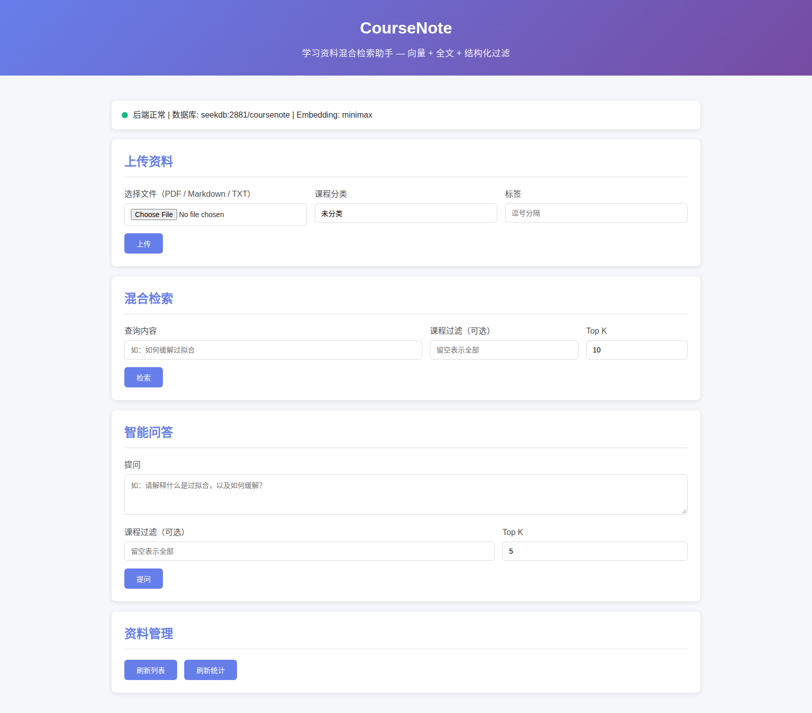
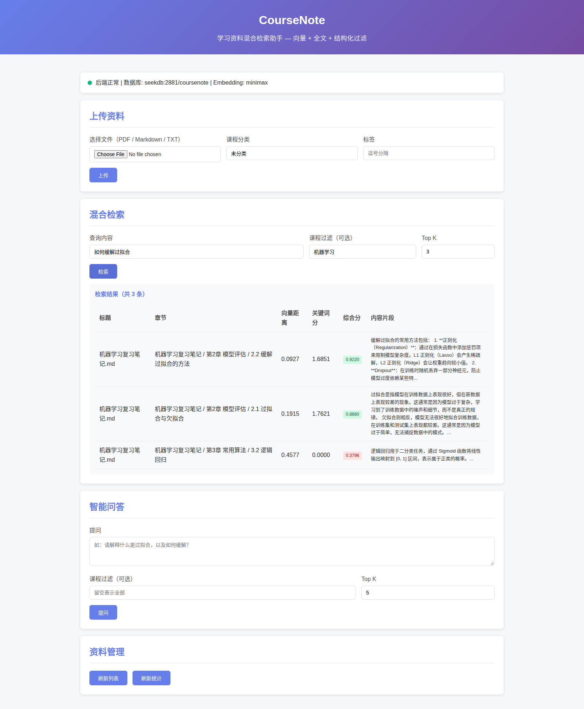
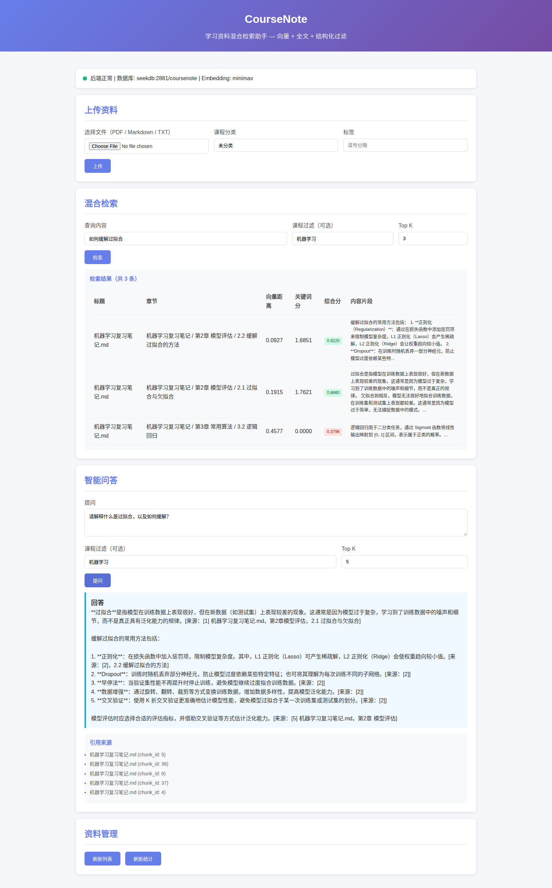

我们解决什么问题
学习科研里，资料散落在不同 PDF、课件和笔记中：想找「某门课怎么讲过某个概念」只能逐个文件翻； 复习时记不清出处；问了同学要等回复。
CourseNote 把资料解析、分块、向量化后存入 seekdb，用「向量 + 全文 + 结构化条件」 混合检索 找出最相关片段，再由大模型基于检索结果生成带出处的答案。
seekdb 混合检索VECTOR(1536)ngram 全文索引
HNSW/cosineMiniMax embo-01 / M2.5PowerContext 记忆
核心能力
| 能力 | 实现 |
|---|---|
| 资料入库 | 上传 PDF / Markdown / TXT → 按标题与长度分块 → MiniMax embo-01 向量化 → 写入 seekdb |
| 混合检索 | 一条 SQL 同时使用：VECTOR_DISTANCE（语义）+ MATCH ... AGAINST（中文 ngram 全文）+ WHERE course = ?（结构化过滤），按 0.7×语义 + 0.3×关键词 融合打分 |
| 带出处问答 | Top-K 片段作为上下文交给 MiniMax-M2.5，答案逐句标注来源章节，并返回引用列表 |
| 资料管理 | 文档列表 / 删除 / 按课程统计 |
| 记忆增强 | 可选接入 PowerContext，记录课程偏好与检索历史，下次检索自动带上 |
技术结合是真的在起作用（实测对照）
同一个查询「向量时钟」，只切换课程过滤：
| 过滤条件 | Top-1 来源 | 向量距离 | 关键词分 |
|---|---|---|---|
| course = 分布式系统 | 分布式系统讲义.md · 2.3 向量时钟 | 0.2738 | 3.8248 |
| course = 机器学习 | 机器学习复习笔记.md · 3.4 支持向量 | 1.1817 | 0.9994 |
正确课程下语义更近、关键词命中更强 —— 说明向量、全文与过滤三者都在真实参与打分。
SELECT c.chunk_id, c.heading, d.title,
VECTOR_DISTANCE(c.embedding, '[1536 维]') AS vdist,
MATCH(c.content) AGAINST ('向量时钟' IN NATURAL LANGUAGE MODE) AS kw
FROM chunks c JOIN docs d ON d.doc_id = c.doc_id
WHERE c.course = '分布式系统'
ORDER BY (0.7*(1-VECTOR_DISTANCE(c.embedding,'[1536 维]'))
+ 0.3*MATCH(c.content) AGAINST ('向量时钟' IN NATURAL LANGUAGE MODE)) DESC
LIMIT 10;
界面



如何运行
cd qoder/ cp .env.example .env # 填入 MINIMAX_API_KEY（或 EMBED_PROVIDER=local 离线运行） docker compose up -d --build docker compose exec app python scripts/seed_data.py docker compose exec app python scripts/smoke_test.py # 浏览器打开 http://localhost:8080
本地方式：pip install -r requirements.txt → python scripts/seed_data.py →
uvicorn app.main:app --port 8080 → python scripts/smoke_test.py（自动拉起服务并端到端自检）。
代码仓库
github.com/wangziye24/powercontext-2026
（分支 2026-competition-ecosystem）
开发过程由 Qoder 完成（需求拆解 → 编码 → 自测 → 文档），项目位于仓库 qoder/ 目录。